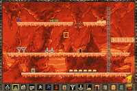

|

Review

Game Type: 2D Action/Puzzle
Lode Runner is almost a genre unto itself, but it would be fair to call
it a cross between Pac-Man (dodging several enemies that mindlessly chase
you around a maze) and Sokoban (a box-pushing puzzle game where a single
move in the wrong direction makes the round unbeatable). In LR's purest form
your character runs and climbs ladders but cannot jump, and has only a gun
that can melt floors and trap anyone (player or enemy) stupid enough to walk
into the pit. You must gather all the bits of gold strewn about a level and
then get to the exit. Added to this version are several weapons like bombs
to blow up walls and floors and gas guns to stun enemies, among others.
Gameplay: 50/100
Any version of Lode Runner true to its ancestry is an excercise in
frustration, and it remains so with this version. Solving the more
difficult stages requires that a very precise series of movements be carried
out, and a single step in the wrong direction can be fatal. This can get
quite annoying when you need to run away from a horde of monsters at top
speed. Recommended only to those masochists who actually like those
infuriatingly hard PC puzzle games where you have to attempt each stage a
dozen times. Anyone who enjoyed the NES or PC incarnations of LR will like
this one.
There's only one feature of this version that I especially like: the
2-player mode. You can play cooperatively to try to clear stages, or you can
turn on your friend and set up the most devious traps for them. If you're
not happy with the battlegrounds provided a level editor is built into the
game, and you can save your creations to a memory card.
Graphics: 40/100
Exceedingly simplistic. Not a polygon in the game. This is one for the
arcade classics crowd. The levels fit in their entirety onto one screen, but
the characters are very small, so there's plenty of space to run
around in. Being able to see the entire stage at once makes solving some
puzzles a lot easier. Each stage has a rather pretty hand-drawn background.
The animation on the characters and enemies is exceedingly good.
Sound: 50/100
Unfortunately I can't really give a fair review to the sound because I
can't seem to get the music to work with the swap trick (even tried
Tekken 1 as a boot disc). I've listened to the music tracks in CD player
mode, and they're pretty good, but of course the game's not the same
without music. The sound effects are of great quality. (And those slurping
sounds while you're being devoured by an enemy - ewww...)
Overall: 40/100
The PS version of LR is of dubious quality (there's one bug where if you
keep pressing into a wall it keeps making the "oof" sound), but the awesome
2-player mode and great animation save it from a really abysmal overall
rating. Still, this can only be recommended for import to steadfast Lode
Runner fans, and I'm not sure there are all that many out there.
|